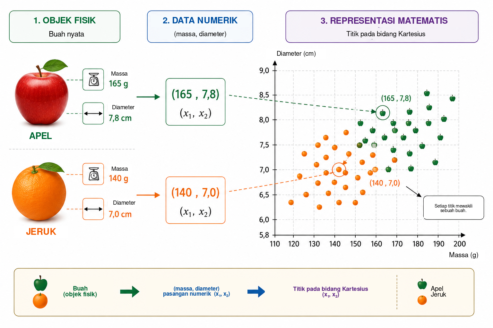
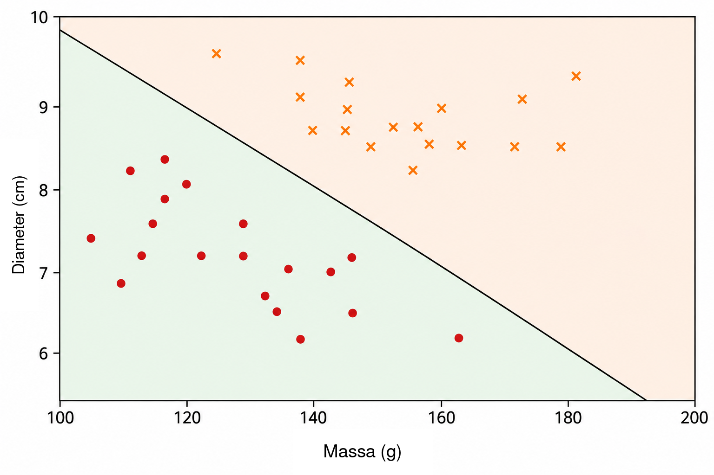
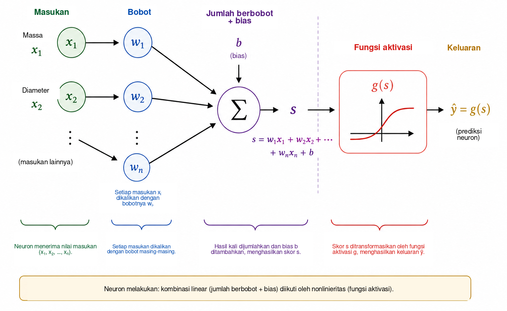
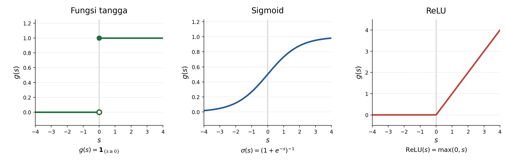
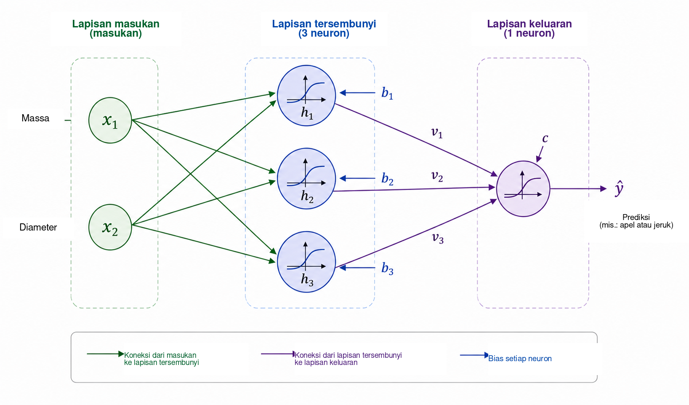
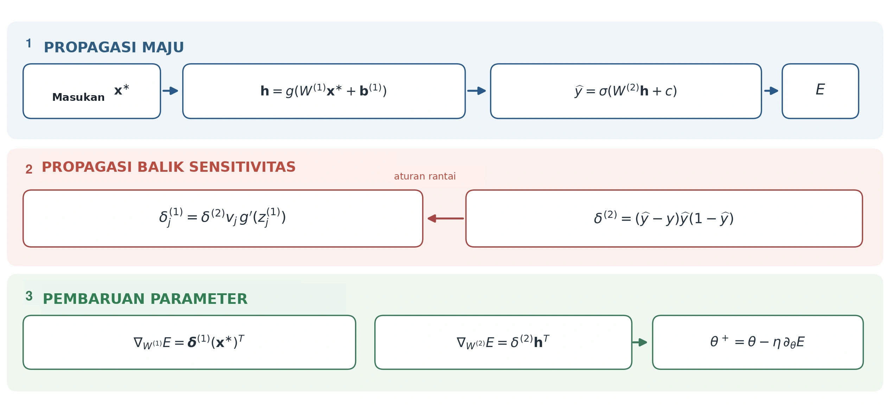
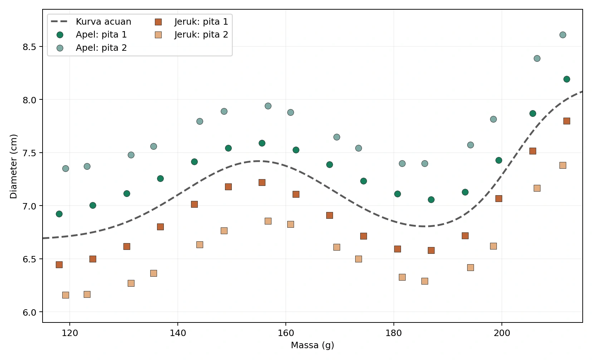
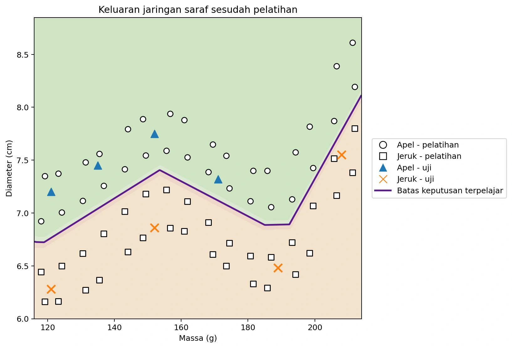

Kapan komputer dapat belajar?
Dalam kehidupan sehari-hari, kita membuat keputusan klasifikasi hampir tanpa menyadarinya. Dengan melihat sebuah buah, kita dengan cepat mengenalinya sebagai apel atau jeruk; ketika sebuah pesan masuk ke telepon, kita membedakan percakapan yang sah dari iklan yang tidak diinginkan; dalam analisis medis, beberapa pengukuran dapat digabungkan untuk mendukung suatu keputusan; dan di lembaga keuangan, berbagai informasi dievaluasi sebelum kredit diberikan. Dalam semua contoh ini, beberapa karakteristik dipertimbangkan secara bersama-sama untuk menghasilkan suatu jawaban.
Dalam banyak program komputer tradisional, aturan yang menghasilkan jawaban tersebut ditulis secara eksplisit oleh pemrogram. Pendekatan ini bekerja dengan baik ketika aturannya diketahui dan dapat dinyatakan secara jelas. Pendekatan ini menjadi kurang efektif ketika data sangat bervariasi atau ketika sulit merumuskan terlebih dahulu setiap kondisi yang diperlukan untuk menghasilkan keputusan yang baik. Dari sini muncul pertanyaan yang alami:
Dapatkah kita membangun sebuah program yang mempelajari aturan keputusan dari contoh, alih-alih menerima aturan tersebut terlebih dahulu?
Inilah salah satu gagasan utama pembelajaran mesin, yaitu bidang kecerdasan buatan yang mempelajari metode untuk menyesuaikan model berdasarkan data . Dalam masalah pembelajaran terawasi, algoritme menerima contoh beserta jawaban yang benar, dan kita mencari model yang juga mampu membuat prediksi yang berguna untuk kasus-kasus yang tidak digunakan selama pelatihan. Di antara banyak model yang dikembangkan untuk tujuan ini, jaringan saraf tiruan menjadi penting dalam aplikasi seperti pengenalan citra, pemrosesan bahasa, analisis sinyal, dan prediksi deret waktu .
Penggunaan jaringan saraf sebagai jembatan antara matematika, komputasi, dan pendidikan sekolah telah dibahas dalam Professor de Matemática Online oleh Batista dan Martins , yang menyajikan kegiatan yang melibatkan pendidikan guru, Python, dan pengenalan angka. Artikel ini mengambil jalur yang saling melengkapi. Tujuan utama kami adalah memperlihatkan matematika internal dari sebuah jaringan saraf kecil, dimulai dari geometri analitik dan berlanjut langkah demi langkah hingga perhitungan gradien dan implementasi manual propagasi balik.
Meskipun aplikasi modern tampak sangat canggih, inti matematis jaringan saraf dapat diperkenalkan melalui gagasan yang relatif familiar. Pada tingkat dasar, jaringan saraf adalah komposisi fungsi yang parameternya disesuaikan dari data. Kita mulai dengan sebuah masalah geometri sederhana, menafsirkan kembali garis pemisah sebagai neuron tiruan, menghubungkan beberapa neuron, mempelajari peran fungsi aktivasi, dan menunjukkan bagaimana turunan dapat digunakan untuk menyesuaikan parameter jaringan secara otomatis. Setelah itu kita mengimplementasikan sebuah contoh kecil yang lengkap dalam Python dengan mempertahankan hubungan langsung antara persamaan dan kode.
Merepresentasikan masalah secara matematis
Untuk memahami bagaimana jaringan saraf bekerja, kita mulai dengan masalah yang sengaja dibuat sederhana: membedakan apel dari jeruk. Sebuah buah memiliki banyak karakteristik yang dapat berguna untuk tugas ini, seperti warna, massa, diameter, tekstur, dan aroma. Namun, model matematis awal tidak perlu memuat seluruh kompleksitas tersebut. Kita hanya akan menggunakan dua besaran yang mudah diukur: massa, dalam gram, dan diameter, dalam sentimeter.
Setiap buah akan direpresentasikan oleh pasangan terurut \[(x_1,x_2),\] dengan \[x_1=\text{massa} \qquad\text{dan}\qquad x_2=\text{diameter}.\]
Dengan demikian, pasangan \((155,\;7.2)\) merepresentasikan buah bermassa \(155\) g dan berdiameter \(7.2\) cm. Dengan mengganti objek fisik oleh dua pengukuran numerik, kita mengaitkan setiap buah dengan sebuah titik pada bidang Kartesius: koordinat pertama menyatakan massanya dan koordinat kedua diameternya. Gambar 1 memperlihatkan representasi ini untuk suatu himpunan hipotetis apel dan jeruk.

Transformasi ini mengubah cara kita melihat masalah. Alih-alih bertanya langsung bagaimana mengenali apel atau jeruk, kita dapat mengajukan pertanyaan geometri: bagaimana titik-titik yang termasuk ke dalam dua kelas dapat dipisahkan pada bidang? Perubahan sudut pandang ini sangat mendasar dalam pembelajaran mesin. Citra, teks, suara, dan sinyal eksperimen semuanya harus diubah menjadi representasi numerik sebelum dapat diproses oleh algoritme. Dalam contoh kita, setiap objek hanya memiliki dua koordinat; dalam aplikasi nyata, sebuah representasi dapat memuat ratusan, ribuan, bahkan jutaan komponen. Prinsipnya tetap sama: setiap contoh dikaitkan dengan sekumpulan angka, dan model mencari aturan yang memetakan representasi tersebut ke jawaban yang diinginkan.
Kita mulai dengan aturan geometri paling sederhana dan bertanya apakah sebuah garis lurus tunggal dapat memisahkan titik-titik apel dari titik-titik jeruk dengan cukup baik.
Garis lurus sebagai pengklasifikasi
Setelah setiap buah direpresentasikan sebagai titik pada bidang Kartesius, klasifikasi menjadi masalah geometri: dapatkah sebuah garis lurus memisahkan apel dari jeruk? Pertanyaan ini menangkap gagasan dasar dari keluarga penting metode pembelajaran mesin yang dikenal sebagai pengklasifikasi linear.
Perhatikan sebuah garis yang melintasi kumpulan data seperti pada Gambar 2. Garis tersebut membagi bidang menjadi dua setengah bidang. Jika sebagian besar titik apel berada di satu sisi dan sebagian besar titik jeruk berada di sisi lain, posisi buah baru terhadap garis dapat digunakan sebagai aturan klasifikasi. Setelah massa dan diameternya diukur, kita merepresentasikan buah itu sebagai sebuah titik dan menentukan pada sisi garis mana titik tersebut berada.

Pada bidang Kartesius \((x_1,x_2)\), sebuah garis dapat dideskripsikan oleh \[w_1x_1+w_2x_2+b=0, \qquad (w_1,w_2)\neq(0,0).\]
Vektor \((w_1,w_2)\) tegak lurus terhadap garis dan karena itu menentukan orientasinya, sedangkan parameter \(b\) turut menentukan posisinya. Representasi ini memiliki sedikit redundansi: mengalikan \(w_1\), \(w_2\), dan \(b\) dengan konstanta tak nol yang sama menghasilkan garis yang persis sama. Jadi, parameter yang mendeskripsikan batas tersebut tidak unik. Interpretasi numeriknya juga bergantung pada skala variabel. Karena massa diukur dalam gram dan diameter dalam sentimeter, besar numerik \(w_1\) dan \(w_2\) tidak boleh dibandingkan tanpa memperhitungkan perbedaan satuan.
Persamaan garis itu sendiri memberikan cara sederhana untuk menentukan pada sisi batas mana suatu titik berada. Definisikan skor \[s(x_1,x_2)=w_1x_1+w_2x_2+b.\]
Jika \(s(x_1,x_2)=0\), titik berada tepat pada garis. Jika \(s(x_1,x_2)>0\), titik berada pada satu setengah bidang; jika \(s(x_1,x_2)<0\), titik berada pada setengah bidang yang lain. Jika kita menetapkan bahwa skor positif bersesuaian dengan apel dan skor negatif dengan jeruk, aturannya menjadi \[\begin{cases} s(x_1,x_2)\geq 0 & \Longrightarrow \text{apel},\\ s(x_1,x_2)<0 & \Longrightarrow \text{jeruk}. \end{cases}\]
Sebagai contoh, perhatikan batas yang ditentukan oleh \[w_1=\frac{1}{10}, \qquad w_2=2, \qquad b=-30.\] Untuk buah bermassa \(160\) g dan berdiameter \(7.8\) cm, \[\begin{aligned} s &=\frac{1}{10}\times160+2\times7.8-30\\ &=16+15.6-30\\ &=1.6. \end{aligned}\] Karena skornya positif, titik berada pada setengah bidang yang kita kaitkan dengan apel. Pengklasifikasi ini karena itu akan memberi label buah tersebut sebagai apel.
Tidak setiap pilihan \(w_1\), \(w_2\), dan \(b\) menghasilkan klasifikasi yang baik. Beberapa garis memisahkan kedua kelompok dengan buruk, sedangkan yang lain menghasilkan lebih sedikit kesalahan. Masalah pembelajaran tepatnya adalah menggunakan contoh yang telah diberi label untuk menentukan nilai parameter yang mengurangi suatu ukuran galat model. Alih-alih memprogram posisi garis secara langsung, kita ingin algoritme menyesuaikan koefisiennya berdasarkan data.
Sebuah garis tunggal dapat bekerja dengan baik ketika kelas-kelas kurang lebih dapat dipisahkan secara linear. Himpunan data yang lebih rumit mungkin memerlukan batas nonlinear. Sebelum membahas keterbatasan tersebut, kita menafsirkan kembali pengklasifikasi yang baru dibangun sebagai unit komputasi elementer: sebuah neuron tiruan.
Neuron tiruan
Pada bagian sebelumnya, ekspresi \[s=w_1x_1+w_2x_2+b\] digunakan untuk menentukan pada sisi garis mana sebuah buah berada. Ekspresi yang sama dapat dipandang sebagai tahap pertama dari komputasi yang dilakukan oleh sebuah neuron tiruan. Sebuah neuron menerima masukan numerik, menggabungkannya menggunakan bobot dan bias, kemudian menerapkan suatu fungsi matematis untuk memperoleh keluarannya.
Dalam contoh kita, masukannya adalah massa \(x_1\) dan diameter \(x_2\). Setiap masukan dikalikan dengan sebuah parameter yang disebut bobot; hasil-hasil kali dijumlahkan bersama suku konstan \(b\), yang disebut bias. Gambar 3 menunjukkan komputasi ini secara skematis.

Bobot menentukan bagaimana perubahan pada masukan memengaruhi skor. Jika \(x_2\) dan semua besaran lain dipertahankan tetap, perubahan \(\Delta x_1\) mengubah \(s\) sebesar \(w_1\Delta x_1\). Demikian pula, perubahan \(\Delta x_2\) mengubah skor sebesar \(w_2\Delta x_2\). Tanda bobot juga penting: bobot positif membuat peningkatan masukan meningkatkan skor, sedangkan bobot negatif menghasilkan efek sebaliknya. Interpretasi ini harus digunakan dengan hati-hati ketika variabel memiliki satuan dan skala yang berbeda. Karena alasan ini, implementasi praktis sering melakukan normalisasi atau standardisasi data masukan sebelum pelatihan.
Bias \(b\) adalah suku konstan dalam transformasi afin. Secara geometris, bias memungkinkan batas keputusan bergeser. Jika \(b=0\), persamaan \[w_1x_1+w_2x_2=0\] memaksa garis melalui titik asal. Dengan adanya bias, batas dapat berpindah ke lokasi lain. Secara ekuivalen, ketika \(x_1=x_2=0\), skornya hanyalah \(s=b\).
Skor tidak harus menjadi keluaran akhir neuron. Secara umum, sebuah fungsi aktivasi \(g\) diterapkan pada skor: \[\widehat{y}=g(s)=g\left(w_1x_1+w_2x_2+b\right).\] Dengan demikian, komputasi memiliki dua tahap, \[\begin{aligned} s &= w_1x_1+w_2x_2+b,\\[4pt] \widehat{y} &= g(s). \end{aligned}\]
Dengan nilai parameter dari bagian sebelumnya diperoleh \(s=1.6\). Jika kita memilih fungsi tangga \[g(s)= \begin{cases} 1, & s\geq0,\\ 0, & s<0, \end{cases}\] maka \(\widehat{y}=g(1.6)=1\). Berdasarkan konvensi kita, buah tersebut diklasifikasikan sebagai apel. Dengan aktivasi ini, keputusan berubah ketika \(s\) melintasi nol, sehingga batas kelas tepat diberikan oleh \[w_1x_1+w_2x_2+b=0.\]
Sebuah neuron tunggal karena itu merupakan objek matematis sederhana dengan parameter yang dapat disesuaikan. Kepentingan sebenarnya muncul ketika banyak unit semacam ini dihubungkan. Namun sebelum membangun jaringan, kita perlu memahami mengapa fungsi aktivasi sangat penting.
Mengapa kita memerlukan fungsi aktivasi?
Sebuah neuron mula-mula menghitung skor melalui transformasi afin, lalu menerapkan fungsi aktivasi. Tahap kedua ini sangat penting agar jaringan saraf dapat merepresentasikan hubungan yang rumit. Untuk melihat alasannya, bayangkan jaringan tanpa fungsi aktivasi. Setiap unit akan berbentuk \[y=w_1x_1+w_2x_2+b.\]
Untuk ilustrasi satu dimensi, misalkan unit pertama menghasilkan \[h=ax+b\] dan unit kedua menghitung \[y=ch+d.\] Dengan substitusi diperoleh \[y=c(ax+b)+d=acx+(cb+d),\] yang tetap merupakan fungsi afin dari \(x\). Pernyataan yang sama berlaku dalam beberapa dimensi: komposisi transformasi afin tetap merupakan transformasi afin. Karena itu, menambahkan banyak lapisan tanpa operasi nonlinear tidak membuat jaringan secara mendasar lebih ekspresif; seluruh komposisi dapat diganti oleh satu transformasi afin saja.
Fungsi aktivasi mematahkan keterbatasan ini. Setelah menghitung skor \(s\), neuron menerapkan pemetaan yang biasanya nonlinear \[h=g(s).\] Ketika beberapa unit semacam ini dihubungkan, komposisi yang dihasilkan tidak lagi dapat direduksi menjadi satu transformasi afin. Hal ini memungkinkan jaringan membangun batas keputusan yang lebih rumit.
Aktivasi yang paling sederhana adalah fungsi tangga, \[g(s)= \begin{cases} 1, & s\geq0,\\ 0, & s<0. \end{cases}\] Fungsi ini menghasilkan keputusan biner dan sangat berguna untuk memahami klasifikasi. Namun turunannya bernilai nol untuk \(s\neq0\) dan tidak terdefinisi pada \(s=0\). Karena pelatihan berbasis gradien menggunakan turunan untuk menentukan bagaimana parameter harus berubah, fungsi tangga tidak sesuai untuk mekanisme pelatihan tersebut.
Salah satu alternatif adalah fungsi sigmoid, \[\sigma(s)=\frac{1}{1+e^{-s}}.\] Fungsi ini memetakan setiap bilangan real ke nilai yang secara ketat berada di antara \(0\) dan \(1\). Untuk \(s\) yang sangat negatif, keluarannya mendekati \(0\); untuk \(s\) yang sangat positif, keluarannya mendekati \(1\); di antara kedua keadaan ini, transisinya halus. Sigmoid terdiferensial di setiap titik, dengan \[\sigma'(s)=\sigma(s)\bigl(1-\sigma(s)\bigr).\] Karena keluarannya berada di antara \(0\) dan \(1\), sigmoid sering digunakan pada lapisan keluaran pengklasifikasi biner. Dalam formulasi probabilistik dengan fungsi galat yang sesuai, keluaran dapat ditafsirkan sebagai estimasi probabilitas kelas yang direpresentasikan oleh \(1\). Namun pada lapisan tersembunyi, sigmoid dapat menimbulkan kesulitan: untuk masukan dengan magnitudo besar, turunannya menjadi sangat kecil, sehingga berkontribusi pada masalah gradien menghilang dalam jaringan yang dalam.
Aktivasi lapisan tersembunyi yang banyak digunakan adalah ReLU (Rectified Linear Unit), \[\operatorname{ReLU}(s)=\max(0,s) = \begin{cases} 0, & s<0,\\ s, & s\geq0. \end{cases}\] Walaupun tersusun dari dua bagian linear, ReLU tidak linear secara global. Turunannya bernilai \(0\) untuk \(s<0\) dan \(1\) untuk \(s>0\). Pada \(s=0\), turunan biasa tidak ada dan implementasi perangkat lunak menggunakan suatu konvensi untuk gradien. Untuk masukan positif, turunan tidak mengecil ketika \(s\) bertambah, sehingga menghindari salah satu mekanisme saturasi sigmoid.
Gambar 4 membandingkan ketiga aktivasi ini secara visual: lompatan tiba-tiba fungsi tangga, transisi sigmoid yang halus, dan perubahan kemiringan pada ReLU.

Sifat-sifat utamanya dirangkum di bawah ini.
| Fungsi | Keluaran | Turunan | Penggunaan umum |
|---|---|---|---|
| Tangga | \(\{0,1\}\) | Nol untuk \(s\neq0\); tidak terdefinisi pada \(s=0\) | Model historis dan contoh didaktis |
| Sigmoid | \((0,1)\) | Ada untuk setiap \(s\) | Lapisan keluaran dalam klasifikasi biner |
| ReLU | \([0,\infty)\) | \(0\) untuk \(s<0\) dan \(1\) untuk \(s>0\) | Lapisan tersembunyi |
Rincian ketiga fungsi tersebut berbeda, tetapi peran konseptual yang sama adalah memperkenalkan nonlinieritas. Nonlinieritas inilah yang memungkinkan jaringan kecil pada bagian berikutnya merepresentasikan hubungan yang tidak dapat ditangkap oleh satu garis lurus.
Bagi pembaca yang ingin melangkah lebih jauh, Haykin memberikan pembahasan klasik mengenai jaringan saraf, sedangkan Goodfellow, Bengio, dan Courville membahas fungsi aktivasi dan pelatihan jaringan dalam pada konteks yang lebih luas. Teks Nielsen yang tersedia bebas sangat mudah diakses untuk mengembangkan intuisi mengenai neuron, aktivasi, dan pembelajaran.
Membangun jaringan saraf kecil
Sekarang kita mempertimbangkan sebuah jaringan dengan dua masukan, satu lapisan tersembunyi yang berisi tiga neuron, dan satu neuron keluaran. Masukannya tetap \[x_1=\text{massa}, \qquad x_2=\text{diameter},\] dan keduanya diberikan kepada setiap neuron tersembunyi, seperti ditunjukkan pada Gambar 5.

Misalkan keluaran lapisan tersembunyi adalah \(h_1\), \(h_2\), dan \(h_3\). Setiap neuron menerima dua masukan yang sama, tetapi memiliki bobot dan biasnya sendiri: \[\begin{aligned} h_1&=g\left(w_{11}x_1+w_{12}x_2+b_1\right),\\[4pt] h_2&=g\left(w_{21}x_1+w_{22}x_2+b_2\right),\\[4pt] h_3&=g\left(w_{31}x_1+w_{32}x_2+b_3\right). \end{aligned}\]
Walaupun ketiga neuron menerima massa dan diameter yang sama, mereka dapat menghasilkan respons yang berbeda karena parameternya berbeda. Selama pelatihan, parameter-parameter tersebut disesuaikan agar aktivasi antara menjadi berguna untuk klasifikasi.
Ketiga besaran \(h_1\), \(h_2\), dan \(h_3\) kemudian diteruskan ke neuron keluaran, yang menghitung \[s_{\mathrm{out}}=v_1h_1+v_2h_2+v_3h_3+c\] dan menghasilkan \[\widehat{y}=g_{\mathrm{out}}\left(s_{\mathrm{out}}\right).\] Untuk masalah biner kita, digunakan keluaran sigmoid: \[\widehat{y}=\sigma\left(v_1h_1+v_2h_2+v_3h_3+c\right), \qquad 0<\widehat{y}<1.\]
Dengan menggunakan \(y=1\) untuk apel dan \(y=0\) untuk jeruk, ambang \(0.5\) memberikan keputusan kelas \[\widehat{y}\geq0.5 \Longrightarrow \text{apel}, \qquad \widehat{y}<0.5 \Longrightarrow \text{jeruk}.\] Nilai yang dekat dengan \(1\) karena itu sangat berkaitan dengan apel, sedangkan nilai yang dekat dengan \(0\) berkaitan dengan jeruk. Seperti telah disebutkan, menafsirkan \(\widehat{y}\) secara numerik sebagai probabilitas memerlukan asumsi tambahan mengenai model dan proses pelatihannya. Untuk aturan klasifikasi yang digunakan di sini, cukup memandang \(\widehat{y}\) sebagai keluaran kontinu dari jaringan.
Ciri utama arsitektur ini adalah representasi antara \[(x_1,x_2) \longrightarrow (h_1,h_2,h_3) \longrightarrow \widehat{y}.\] Jaringan menerima dua fitur dan membangun tiga besaran baru sebelum menghasilkan jawaban akhir. Aktivasi ini tidak dipilih secara manual: nilainya bergantung pada bobot dan bias, sehingga berubah ketika parameter dilatih.
Meskipun kecil, jaringan tersebut sudah memiliki tiga belas parameter yang dapat disesuaikan. Tiga neuron tersembunyi memuat \[3(2+1)=9\] parameter, dan neuron keluaran menambahkan \[3+1=4.\] Karena itu, \[9+4=13.\]
Perhitungan yang sama menjadi lebih jelas dalam notasi matriks. Definisikan \[\mathbf{x}= \begin{bmatrix} x_1\\x_2 \end{bmatrix}, \qquad W^{(1)}= \begin{bmatrix} w_{11}&w_{12}\\ w_{21}&w_{22}\\ w_{31}&w_{32} \end{bmatrix}, \qquad \mathbf{b}^{(1)}= \begin{bmatrix} b_1\\b_2\\b_3 \end{bmatrix}.\] Lapisan tersembunyi kemudian dapat ditulis secara ringkas sebagai \[\mathbf{h}=g\left(W^{(1)}\mathbf{x}+\mathbf{b}^{(1)}\right),\] dengan \(g\) bekerja komponen demi komponen. Untuk keluaran, \[\widehat{y} = \sigma\left(W^{(2)}\mathbf{h}+b^{(2)}\right),\] dengan \[W^{(2)}= \begin{bmatrix} v_1&v_2&v_3 \end{bmatrix}.\]
Notasi ini mengantisipasi struktur yang akan muncul dalam program Python. Ketika sebuah buah diberikan pada masukan dan kita menghitung aktivasi secara berurutan hingga memperoleh \(\widehat{y}\), kita melakukan propagasi maju atau forward pass. Pertanyaan utama tetap sama: bagaimana ketiga belas parameter dapat ditentukan secara otomatis agar prediksi sesuai dengan data?
Bagaimana jaringan saraf belajar?
Bobot dan bias jaringan tidak diketahui sejak awal. Keduanya disesuaikan menggunakan contoh yang label kelasnya diketahui. Proses belajar mengulangi propagasi maju, penghitungan rugi, penghitungan gradien, dan pembaruan parameter (Gambar 6). Aturan rantai memungkinkan kita menghitung pengaruh lokal setiap bobot dan bias terhadap rugi. Untuk menyesuaikan parameter, diperlukan ukuran numerik selisih antara prediksi dan jawaban yang diharapkan. Fungsi rugi memberi penalti kepada setiap prediksi dan memungkinkan perbandingan berbagai pilihan parameter. Berbeda dari sekadar menghitung kesalahan klasifikasi, rugi kontinu membedakan jarak prediksi dari label dan memiliki turunan yang memandu pelatihan. Pertimbangkan jeruk bermassa \(140\) g dan berdiameter \(7.0\) cm, dengan \(y=0\). Jika keluaran jaringan \(\widehat y\in(0,1)\), rugi kuadrat untuk satu contoh ialah
\[\label{eq:perda} E=\frac12(\widehat y-y)^2.\]
Di sini \(y\) merupakan label sebenarnya dan \(\widehat y\) prediksi. Rugi tidak negatif dan bernilai nol jika prediksi sama dengan label. Untuk jeruk, prediksi \(0.80\) dan \(0.60\) masing-masing menghasilkan \(E=0.32\) dan \(E=0.18\). Keduanya salah pada ambang \(0.5\), tetapi rugi membedakan mana yang lebih dekat ke label. Faktor \(1/2\) tidak mengubah nilai minimumnya, namun menyederhanakan turunan. Untuk \(N\) pengamatan kita definisikan rugi rata-rata sebagai
\[\label{eq:perda_media} J=\frac1N\sum_{i=1}^{N}E_i.\]
Rata-rata ini merangkum kecocokan pada data pelatihan dan menjadi besaran yang dikurangi melalui pembaruan parameter. Meminimalkan \(J\) saja tidak menjamin prediksi baik pada data baru. Kita memakai rugi kuadrat karena bentuk aljabarnya sederhana, kemudian membandingkan gradiennya dengan entropi silang biner tanpa mengubah eksperimen numerik [2, 3].

Apabila \(\theta\) adalah bobot atau bias, \(\partial J/\partial\theta\) mengukur sensitivitas lokal rugi rata-rata terhadap parameter itu. Langkah penurunan gradien ditulis
\[\label{eq:descida} \theta_{\mathrm{new}}=\theta_{\mathrm{old}}-\eta\frac{\partial J}{\partial\theta},\qquad \eta>0.\]
Laju pembelajaran \(\eta\) mengatur ukuran langkah. Nilai terlalu kecil dapat memperlambat konvergensi, sedangkan terlalu besar dapat menimbulkan osilasi atau divergensi. Jika parameter diperbarui setelah setiap pengamatan, seperti pada kode di Bagian 8, \(\partial J/\partial\theta\) diganti dengan \(\partial E_i/\partial\theta\). Inilah penurunan gradien stokastik (SGD).
Aturan rantai pada jaringan 2–3–1
Kita memakai jaringan pada Gambar [fig:pequena_rede] dengan tiga neuron tersembunyi ReLU dan keluaran sigmoid. Masukan massa (gram) dan diameter (sentimeter) mempunyai skala berbeda. Agar pengondisian parameter tidak terganggu, setiap fitur ditransformasikan menjadi \(x_j^\ast=(x_j-\mu_j)/\sigma_j\), dengan \(\mu_j\) dan \(\sigma_j>0\) sebagai rerata dan simpangan baku acuan. Masukan menjadi tak berdimensi dan sebanding skalanya. Pada eksperimen komputasi statistik ini diperoleh hanya dari data pelatihan agar informasi data uji tidak bocor. Dalam contoh hitungan berikut, pusat dan skala dipilih tetap semata-mata agar aritmetikanya mudah. Untuk \(\mathbf{x}^\ast=(x_1^\ast,x_2^\ast)^{\mathsf T}\), propagasi maju ialah
\[\label{eq:forward} \begin{aligned} \mathbf{z}^{(1)}&=W^{(1)}\mathbf{x}^{\ast}+\mathbf{b}^{(1)}, &\mathbf{h}&=\operatorname{ReLU}(\mathbf{z}^{(1)}),\\ z^{(2)}&=W^{(2)}\mathbf{h}+c, &\widehat y&=\sigma(z^{(2)}). \end{aligned}\]
Di sini \(c=b^{(2)}\) adalah bias keluaran dan \(W^{(2)}=(v_1,v_2,v_3)\). Propagasi balik dimulai dari neuron keluaran melalui penerapan aturan rantai secara berurutan:
\[\label{eq:delta_saida} \begin{aligned} \delta^{(2)}:=\frac{\partial E}{\partial z^{(2)}} &=\underbrace{\frac{\partial E}{\partial\widehat y}}_{\widehat y-y} \underbrace{\frac{\partial\widehat y}{\partial z^{(2)}}}_{\widehat y(1-\widehat y)} =(\widehat y-y)\widehat y(1-\widehat y),\\ \frac{\partial E}{\partial v_j}&=\delta^{(2)}h_j, \qquad \frac{\partial E}{\partial c}=\delta^{(2)}. \end{aligned}\]
Karena setiap aktivasi \(h_j\) juga bergantung pada bobot dan biasnya, kita menghitung sensitivitas neuron tersembunyi:
\[\label{eq:delta_oculta} \begin{aligned} \delta_j^{(1)}:=\frac{\partial E}{\partial z_j^{(1)}} &=\delta^{(2)}v_j\,\operatorname{ReLU}'(z_j^{(1)}),\\ \frac{\partial E}{\partial w_{jk}} &=\delta_j^{(1)}x_k^{\ast},\qquad \frac{\partial E}{\partial b_j}=\delta_j^{(1)}. \end{aligned}\]
ReLU tidak terdiferensialkan pada nol; sebagai konvensi komputasional kita ambil \(\operatorname{ReLU}'(0)=0\). Besaran \(\delta^{(2)}\) dan \(\delta_j^{(1)}\) ialah sensitivitas lokal rugi, bukan sinyal kesalahan fisik yang berjalan melewati jaringan. Pemakaian ulang besaran itu menghasilkan ketiga belas gradien tanpa mengulang diferensiasi dari awal untuk setiap bobot.
Pembaruan parameter numerik secara lengkap
Khusus untuk contoh ini kita tetapkan pusat \(160\) g dan skala \(20\) g bagi massa, serta pusat \(7.5\) cm dan skala \(0.5\) cm bagi diameter. Buah \((140\,\mathrm{g},7.0\,\mathrm{cm})\) menghasilkan masukan tak berdimensi
\[\label{eq:exemplo_entrada} \mathbf{x}^{\ast}=\begin{bmatrix}(140-160)/20\\(7.0-7.5)/0.5\end{bmatrix} =\begin{bmatrix}-1\\-1\end{bmatrix}.\]
Nilai acuan ini hanya untuk demonstrasi; pada Bagian 8, rerata dan simpangan baku dihitung dari data pelatihan. Pilih ketiga belas parameter awal sebagai
\[\label{eq:param_iniciais} W^{(1)}=\begin{bmatrix} 0.2&0.1\\-0.3&0.2\\0.1&-0.4 \end{bmatrix},\quad \mathbf{b}^{(1)}=\begin{bmatrix}\phantom{-}0.5\\\phantom{-}0.2\\-0.5\end{bmatrix},\quad W^{(2)}=\begin{bmatrix}\phantom{-}0.5&-0.4&\phantom{-}0.3\end{bmatrix},\quad c=1.\]
Persamaan forward berturut-turut memberikan
\[\label{eq:exemplo_forward} \begin{gathered} \mathbf{z}^{(1)}=(0.2,\;0.3,\;-0.2)^{\mathsf T},\qquad \mathbf{h}=(0.2,\;0.3,\;0)^{\mathsf T},\\ z^{(2)}=0.5(0.2)-0.4(0.3)+1=0.98,\\ \widehat y=\sigma(0.98)\simeq0.727108,\qquad E\simeq0.264343. \end{gathered}\]
Prediksi awal masuk kelas yang salah. Dari Persamaan delta_saida dan delta_oculta diperoleh
\[\label{eq:exemplo_gradientes} \begin{gathered} \delta^{(2)}\simeq0.144274,\qquad \boldsymbol{\delta}^{(1)}\simeq(0.072137,\;-0.057710,\;0)^{\mathsf T},\\ \frac{\partial E}{\partial W^{(2)}}\simeq (0.028855,\;0.043282,\;0),\qquad \frac{\partial E}{\partial W^{(1)}}\simeq \begin{bmatrix}-0.072137&-0.072137\\\phantom{-}0.057710&\phantom{-}0.057710\\\phantom{-}0&\phantom{-}0\end{bmatrix}. \end{gathered}\]
Neuron tersembunyi ketiga tidak aktif (\(z_3^{(1)}<0\)), sehingga gradien bobot masuk dan biasnya nol pada langkah ini. Dengan \(\eta=0.05\), kita memperbarui semua parameter secara serentak melalui \(\theta_{\mathrm{new}}=\theta_{\mathrm{old}}-0.05\,\partial E/\partial\theta\). Tabel 1 menampilkan beberapa dari ketiga belas pembaruan.
| Parameter \(\theta\) | Awal | \(\partial E/\partial\theta\) | Baru |
|---|---|---|---|
| \(v_1\) | \(0.500000\) | \(0.028855\) | \(0.498557\) |
| \(v_2\) | \(-0.400000\) | \(0.043282\) | \(-0.402164\) |
| \(c\) | \(1.000000\) | \(0.144274\) | \(0.992786\) |
| \(w_{11}\) | \(0.200000\) | \(-0.072137\) | \(0.203607\) |
| \(w_{21}\) | \(-0.300000\) | \(0.057710\) | \(-0.302885\) |
| \(b_1\) | \(0.500000\) | \(0.072137\) | \(0.496393\) |
| \(w_{31}\) | \(0.100000\) | \(0\) | \(0.100000\) |
Propagasi maju baru dengan semua parameter yang telah diperbarui memberikan \(\widehat y_{\mathrm{new}}\simeq0.723717\) dan \(E_{\mathrm{new}}\simeq0.261883\). Rugi turun setelah satu langkah, walaupun keputusan kelas belum berubah. Pembelajaran memerlukan pengulangan atas banyak contoh dan epoch.
Galat kuadrat dan entropi silang
Galat kuadrat cocok untuk menjelaskan aturan rantai, tetapi klasifikasi biner dengan keluaran sigmoid sering juga memakai entropi silang biner. Untuk \(y\in\{0,1\}\) dan \(\widehat y=\sigma(z)\), rugi satu pengamatan adalah
\[\label{eq:entropia_cruzada} E_{\mathrm{CE}}=-y\ln\widehat y-(1-y)\ln(1-\widehat y).\]
Rugi kuadrat menghukum selisih numerik prediksi dengan label. Sebaliknya, entropi silang menghukum probabilitas rendah yang diberikan kepada kelas teramati, jika \(\widehat y\) dianggap probabilitas kelas \(1\). Perbedaan utama saat pelatihan muncul ketika kita menurunkan fungsi terhadap skor \(z\) pada neuron keluaran. Dengan aturan rantai dan \(\sigma'(z)=\widehat y(1-\widehat y)\) diperoleh
\[\label{eq:derivada_entropia_cruzada} \begin{aligned} \frac{\partial E_{\mathrm{CE}}}{\partial z} &=\left(-\frac{y}{\widehat y}+\frac{1-y}{1-\widehat y}\right) \widehat y(1-\widehat y) =\widehat y-y,\\ \frac{\partial E_{\mathrm{SE}}}{\partial z} &=(\widehat y-y)\widehat y(1-\widehat y), \qquad E_{\mathrm{SE}}=\tfrac12(\widehat y-y)^2. \end{aligned}\]
Sebagai ilustrasi saja, anggap prediksi untuk jeruk (\(y=0\)) adalah \(\widehat y=0.80\). Maka \(E_{\mathrm{SE}}=0.32\) dan \(E_{\mathrm{CE}}=-\ln(0.20)\simeq1.60944\), sedangkan turunan terhadap \(z\) berturut-turut \(0.128\) dan \(0.80\). Pada \(\eta=0.05\), pembaruan bias keluaran tersendiri adalah \(\Delta c=-0.0064\) untuk rugi kuadrat atau \(-0.0400\) untuk entropi silang. Prediksi ilustratif \(0.80\) ini bukan pengganti angka pada perhitungan lengkap sebelumnya. Pada entropi silang, faktor \(\widehat y(1-\widehat y)\) tidak lagi mengalikan sensitivitas lapisan keluaran. Ini menghindari pada lapisan itu peredaman gradien tambahan akibat kejenuhan sigmoid ketika prediksi sangat keliru. Gradien kecil pada lapisan lain masih mungkin terjadi dan pelatihan lebih cepat tidak dijamin. Kedua nilai rugi berbeda skala, sehingga tidak boleh langsung dibandingkan sebagai ukuran kualitas. Kode utama tetap memakai rugi kuadrat agar langkah perhitungan dapat direproduksi; notebook pendamping membandingkan keduanya tanpa mengubah pelatihan.
Epoch dan generalisasi
Satu lintasan lengkap atas seluruh data pelatihan disebut epoch. Program mengacak urutan contoh setiap epoch dan memperbarui parameter sesudah setiap buah. Arsitektur tetap sama, tetapi bobot, bias, dan batas keputusan berubah. Rugi pelatihan rendah tidak menjamin prediksi memadai pada data baru; kemampuan tersebut disebut generalisasi. Apabila kecocokan berlebihan terhadap data pelatihan merusak hasil pada data baru, terjadi overfitting. Pemisahan data pelatihan, validasi, dan pengujian dapat membantu pemilihan hiperparameter dan evaluasi yang kurang bias [2, 3].
Dari matematika ke Python
Sekarang kita menerapkan propagasi maju, aturan rantai, dan pembaruan
stokastik Bagian 7 menggunakan NumPy
saja [4]. Untuk
membentuk batas keputusan nonlinier, lapisan tersembunyi diperluas dari
tiga menjadi dua belas neuron ReLU. Jaringan \(2\)–\(12\)–\(1\)
memiliki \(12(2+1)+(12+1)=49\)
parameter, namun persamaannya sama.
Data sintetis untuk demonstrasi
Eksperimen menggunakan \(64\) contoh pelatihan sintetis dalam empat pita berisi \(16\) titik masing-masing pada bidang massa–diameter, ditambah delapan contoh uji ilustratif. Dua pita apel berada di atas kurva acuan dan dua pita jeruk di bawahnya. Pergeseran deterministik kecil mencegah keteraturan sempurna. Angkanya dipilih hanya untuk menghasilkan sebaran visual yang masuk akal dan batas keputusan nonlinier; data ini bukan pengukuran eksperimen ataupun model fisik buah. Kurva acuan hanya digunakan untuk membangkitkan contoh: kurva tersebut tidak diberikan kepada jaringan, tidak muncul dalam rugi, dan tidak digunakan pada propagasi balik. Pelatihan menggunakan pasangan massa–diameter dan labelnya saja. Persamaan pembangkitan lengkap diberikan pada Lampiran A.

Gambar 7 memperlihatkan titik hasil
construct_data(). Kurva putus-putus hanyalah bagian dari
konstruksi data, bukan batas yang dipelajari. Delapan contoh tambahan
hanya dipakai pada ilustrasi akhir dan tidak memengaruhi statistik
standardisasi.
Standardisasi dan pilihan pelatihan
Karena massa dan diameter memiliki satuan serta skala berbeda, setiap fitur diubah menjadi variabel tak berdimensi:
\[\label{eq:padronizacao} x_j^{\ast}=\frac{x_j-\mu_j}{\sigma_j},\quad \mu_j=\frac1N\sum_{i=1}^N x_{ij},\quad \sigma_j=\sqrt{\frac1N\sum_{i=1}^N(x_{ij}-\mu_j)^2}.\]
Rerata \(\mu_j\) memusatkan fitur
\(j\), sedangkan simpangan baku \(\sigma_j\) menyekalakannya; di sini \(N=64\). Keduanya dihitung hanya
dari data pelatihan, kemudian diterapkan tanpa perubahan kepada data
uji. Diasumsikan \(\sigma_j>0\) dan
transformasi yang sama digunakan pada kisi prediksi. Bobot awal diambil
dari distribusi normal dengan rerata nol, simpangan baku \(0.1\), dan benih acak \(42\). Bobot acak kecil memecah simetri
antarneuron tersembunyi. Pilihan ini sederhana, bukan aturan universal;
pada jaringan lebih besar skala inisialisasi mesti disesuaikan dengan
arsitektur dan fungsi aktivasi. Bias dimulai dari nol. ReLU tidak
memiliki turunan di \(0\);
relu_derivative() mengambil nol sebagai konvensi, tetapi
tidak dengan sendirinya menjamin konvergensi. Kita memilih \(\eta=0.05\) sebagai pilihan berhati-hati,
bukan laju optimum. Tabel 2 menyajikan pemeriksaan sensitivitas
sederhana sesudah \(1000\) epoch dengan
data dan benih tetap. Laju terbesar yang dicoba lebih cepat konvergen
pada data ini, namun hal tersebut tidak membuktikan keunggulannya secara
umum. Nilai \(0.05\) dipertahankan
karena stabil dan riwayat ruginya mudah diperiksa.
| \(\eta\) | Rugi rata-rata \(J\) | Benar dari \(64\) |
|---|---|---|
| \(0.005\) | \(0.041871\) | \(55\) |
| \(0.05\) | \(0.006485\) | \(64\) |
| \(0.2\) | \(0.000106\) | \(64\) |
Implementasi Python lengkap
Program dicantumkan dalam Kode 1–10, disusun berdasarkan
fungsi dan urutan eksekusi. Sepuluh blok berurutan itu bersama-sama
membentuk berkas neural_network.py yang disertakan sebagai
bahan pendamping.
01 — Persiapan lingkungan
"""Contoh pedagogis: klasifikasi buah dengan jaringan 2-12-1.
Dependensi: numpy dan matplotlib. Jalankan: python neural_network.py.
"""
import numpy as np
import matplotlib.pyplot as plt
from matplotlib.lines import Line2D
02 — Aktivasi ReLU
def relu(s):
"""Aktivasi lapisan tersembunyi: ReLU(s) = max(0,s)."""
return np.maximum(0, s)
03 — Turunan komputasional ReLU
def relu_derivative(s):
# ReLU tidak terdiferensialkan pada s=0; turunan komputasinya diambil nol.
# Konvensi ini hanya menentukan langkah propagasi balik di titik tersebut.
return (s > 0).astype(float)
04 — Aktivasi sigmoid
def sigmoid(s):
"""Aktivasi keluaran dengan nilai antara 0 dan 1."""
return 1 / (1 + np.exp(-s))
05 — Kurva bantu untuk pembangkitan data
def reference_curve(m):
# Kurva buatan (cm): pergeseran, tonjolan Gaussian, kenaikan logistik.
# Konstanta dipilih untuk membangun kurva acuan nonlinier;
# bukan pengukuran eksperimen atau parameter hasil fitting.
return (6.68 + 0.74*np.exp(-((m-155)/20)**2)
+ 1.50/(1 + np.exp(-(m-202)/5)))
06 — Data sintetis pelatihan dan pengujian ilustratif
def construct_data():
# Ada 16 massa pada setiap pita: a1, a2, l1, l2.
masses_1 = np.linspace(118, 212, 16)
# Pergeseran deterministik kecil menghindari massa yang identik.
masses_2 = masses_1 + np.array([
1.2, -1.1, 0.8, -1.3, 1.0, -0.8, 1.1, -1.0,
1.3, -0.9, 0.9, -1.2, 1.0, -1.0, 0.8, -0.7
])
k = np.arange(16)
# Apel: dua pita di atas kurva dengan variasi kecil dalam cm.
a1 = np.column_stack([
masses_1,
reference_curve(masses_1) + 0.22 + 0.05*np.sin(0.8*k)
])
a2 = np.column_stack([
masses_2,
reference_curve(masses_2) + 0.58 + 0.06*np.cos(0.45*k)
])
# Jeruk: dua pita di bawah kurva acuan.
l1 = np.column_stack([
masses_1,
reference_curve(masses_1) - (0.22 + 0.04*np.cos(0.7*k))
])
l2 = np.column_stack([
masses_2,
reference_curve(masses_2) - (0.55 + 0.05*np.sin(0.5*k))
])
X_train = np.vstack([a1, a2, l1, l2])
y_train = np.array([1.0]*32 + [0.0]*32)
# Delapan contoh ilustratif, bukan pengujian statistika menyeluruh.
X_test = np.array([
[121.0, 7.20], [135.0, 7.45],
[152.0, 7.75], [171.0, 7.32],
[121.0, 6.28], [152.0, 6.86],
[189.0, 6.48], [208.0, 7.55]
])
y_test = np.array([1, 1, 1, 1, 0, 0, 0, 0], dtype=float)
return X_train, y_train, X_test, y_test
07 — Prediksi dengan propagasi maju
def predict(X, mean, std, W1, b1, W2, b2):
# x_j^* = (x_j - mu_j)/sigma_j, menggunakan statistik data pelatihan.
Xn = (X - mean) / std
# Propagasi maju dalam notasi matriks (satu baris per buah).
h = relu(Xn @ W1.T + b1)
return sigmoid(h @ W2 + b2)
08 — Pelatihan melalui propagasi balik dan penurunan gradien
def train(Xn, y_train, eta=0.05, n_epochs=6000, seed=42):
rng = np.random.default_rng(seed)
# Bobot acak kecil memecah simetri antarneuron;
# bias awal nol. Skala 0.1 dipilih untuk tujuan pedagogis.
W1 = 0.1 * rng.standard_normal((12, 2))
b1 = np.zeros(12)
W2 = 0.1 * rng.standard_normal(12)
b2 = 0.0
history = []
for epoch in range(n_epochs):
# SGD: satu pembaruan per buah, urutan diacak setiap epoch.
for i in rng.permutation(len(Xn)):
x, target = Xn[i], y_train[i]
# Propagasi maju: persamaan lapisan tersembunyi dan keluaran.
z1 = W1 @ x + b1
h = relu(z1)
z2 = W2 @ h + b2
y_hat = sigmoid(z2)
# Propagasi balik: delta2 = dE/dz2 (galat kuadrat).
delta2 = (y_hat - target) * y_hat * (1 - y_hat)
dW2, db2 = delta2 * h, delta2
# delta1_j = delta2 * W2_j * ReLU'(z1_j).
delta1 = (delta2 * W2) * relu_derivative(z1)
dW1 = np.outer(delta1, x)
db1 = delta1
# Penurunan gradien stokastik: theta <- theta - eta*dE/dtheta.
# Semua gradien memakai nilai parameter SEBELUM pembaruan.
W1 -= eta * dW1
b1 -= eta * db1
W2 -= eta * dW2
b2 -= eta * db2
# J: rugi pelatihan rata-rata pada akhir setiap epoch.
h_all = relu(Xn @ W1.T + b1)
y_pred = sigmoid(h_all @ W2 + b2)
history.append(np.mean(0.5 * (y_train - y_pred)**2))
return W1, b1, W2, b2, np.array(history)
09 — Visualisasi batas keputusan yang dipelajari
def plot_results(X_train, y_train, X_test, y_test,
mean, std, W1, b1, W2, b2, save_path=None):
# Himpunan aras y_hat=0.5 ialah batas keputusan HASIL BELAJAR.
masses = np.linspace(116, 214, 500)
diameters = np.linspace(6.0, 8.85, 500)
M, D = np.meshgrid(masses, diameters)
grid = np.column_stack([M.ravel(), D.ravel()])
P = predict(grid, mean, std, W1, b1, W2, b2).reshape(M.shape)
fig, ax = plt.subplots(figsize=(9.2, 6.3))
ax.contourf(M, D, P, levels=[0, 0.25, 0.50, 0.75, 1],
colors=['#f3e0cb', '#ecd5c4', '#dbe7cf', '#cde3bf'],
alpha=0.95)
ax.contour(M, D, P, levels=[0.5], colors=['#5a1a8a'],
linewidths=2.2)
mask = y_train == 1.0
ax.scatter(X_train[mask, 0], X_train[mask, 1], marker='o',
s=48, facecolors='white', edgecolors='black', linewidths=1.1)
mask = y_train == 0.0
ax.scatter(X_train[mask, 0], X_train[mask, 1], marker='s',
s=48, facecolors='white', edgecolors='black', linewidths=1.1)
mask = y_test == 1.0
ax.scatter(X_test[mask, 0], X_test[mask, 1], marker='^',
s=92, color='#1f77b4')
mask = y_test == 0.0
ax.scatter(X_test[mask, 0], X_test[mask, 1], marker='x',
s=110, color='#ff7f0e', linewidths=2.0)
ax.set_xlabel('Massa (g)')
ax.set_ylabel('Diameter (cm)')
ax.set_title('Keluaran jaringan saraf sesudah pelatihan')
handles = [
Line2D([0], [0], marker='o', markersize=9, markerfacecolor='white',
markeredgecolor='black', linestyle='None',
label='Apel - pelatihan'),
Line2D([0], [0], marker='s', markersize=9, markerfacecolor='white',
markeredgecolor='black', linestyle='None',
label='Jeruk - pelatihan'),
Line2D([0], [0], marker='^', markersize=9, color='#1f77b4',
linestyle='None', label='Apel - uji'),
Line2D([0], [0], marker='x', markersize=10, color='#ff7f0e',
linestyle='None', label='Jeruk - uji'),
Line2D([0], [0], color='#5a1a8a', linewidth=2.2,
label='Batas keputusan terpelajar')
]
ax.legend(handles=handles, loc='center left',
bbox_to_anchor=(1.02, 0.5), frameon=True)
fig.tight_layout()
if save_path:
fig.savefig(save_path, dpi=200, bbox_inches='tight')
return fig, ax
10 — Menjalankan eksperimen
if __name__ == '__main__':
X_train, y_train, X_test, y_test = construct_data()
mean, std = X_train.mean(axis=0), X_train.std(axis=0)
Xn = (X_train - mean) / std
W1, b1, W2, b2, history = train(Xn, y_train)
p_train = predict(X_train, mean, std, W1, b1, W2, b2)
p_test = predict(X_test, mean, std, W1, b1, W2, b2)
print('Rugi rata-rata akhir:', history[-1])
print('Prediksi pelatihan benar:', np.sum((p_train >= 0.5) == y_train), '/64')
print('Prediksi uji ilustratif benar:',
np.sum((p_test >= 0.5) == y_test), '/8')
plot_results(X_train, y_train, X_test, y_test,
mean, std, W1, b1, W2, b2)
plt.show()
Fungsi construct_data() (Kode 6)
hanya menerapkan konstruksi sintetis pada Lampiran A; kurva bantu
tidak ikut dioptimasi. Fungsi train() (Kode 8) menerapkan
propagasi maju, perhitungan \(\delta^{(2)}\) dan \(\boldsymbol{\delta}^{(1)}\), gradien, serta
empat pembaruan parameter sesuai Persamaan forward, delta_saida, delta_oculta, dan descida. Semua gradien dihitung
sebelum parameter mana pun diubah. Fungsi plot_results()
menampilkan batas yang dipelajari, bukan kurva pembangkit data. Berkas
Python mandiri dan notebook yang dapat dijalankan disediakan untuk
reproduksi. Sesudah \(6000\) epoch
dengan benih \(42\) dan \(\eta=0.05\), rugi rata-rata akhir ialah
\(J\simeq1.786\times10^{-4}\), dengan
semua \(64\) contoh pelatihan dan
delapan uji ilustratif diklasifikasikan secara benar. Ini memverifikasi
perilaku komputasi pada data sintetis, bukan perkiraan statistik atas
kemampuan generalisasi. Gambar 8
menunjukkan batas \(\widehat y=0.5\)
yang dipelajari: lingkaran dan kotak mewakili pelatihan, sedangkan
segitiga dan tanda silang mewakili uji ilustratif.

Pembahasan bermula dari garis lurus pemisah dua kumpulan titik dan berakhir dengan batas keputusan melengkung hasil penyesuaian parameter otomatis. Implementasi hanya merangkai operasi yang telah dijelaskan: kombinasi linier, aktivasi, turunan, perkalian matriks, dan langkah penurunan gradien [3, 8]. Program Python dan notebook tersedia sebagai bahan pendamping; sumber pembelajaran lain ada di https://neuralmath.org.
Konstruksi himpunan data sintetis
Persamaan pada lampiran ini hanya mendokumentasikan pilihan ad hoc untuk membangkitkan data latihan komputasi. Bentuk ini bukan arsitektur jaringan, fungsi rugi, atau algoritme pelatihan. Tidak ada informasi kurva bantu yang digunakan untuk memperbarui bobot atau bias. Dengan massa \(m\) dinyatakan numerik dalam gram, kurva bantu diameter dalam sentimeter didefinisikan sebagai
\[\label{eq:fronteira_base} d_0(m)=6.68+0.74\exp\!\left[-\left(\frac{m-155}{20}\right)^2\right] +\frac{1.50}{1+\exp[-(m-202)/5]}.\]
Suku pertama menggeser kurva secara vertikal; suku kedua memberikan tonjolan dekat \(155\) g dan suku ketiga kenaikan halus sekitar \(202\) g. Koefisien dipilih demi ilustrasi, bukan melalui fitting data buah. Untuk \(k=0,\ldots,15\), tetapkan \(m_k=118+(212-118)k/15\) gram. Himpunan massa kedua didefinisikan sebagai \(\widetilde m_k=m_k+\varepsilon_k\), dengan pergeseran dalam gram
\[\label{eq:deslocamentos} (1.2,-1.1,0.8,-1.3,1.0,-0.8,1.1,-1.0, 1.3,-0.9,0.9,-1.2,1.0,-1.0,0.8,-0.7).\]
Diameter keempat pita dihitung melalui
\[\label{eq:faixas} \begin{aligned} d_{a1,k}&=d_0(m_k)+0.22+0.05\sin(0.8k),\\ d_{a2,k}&=d_0(\widetilde m_k)+0.58+0.06\cos(0.45k),\\ d_{l1,k}&=d_0(m_k)-\bigl[0.22+0.04\cos(0.7k)\bigr],\\ d_{l2,k}&=d_0(\widetilde m_k)-\bigl[0.55+0.05\sin(0.5k)\bigr]. \end{aligned}\]
Pergeseran vertikal dinyatakan dalam sentimeter. Faktor trigonometri
menghindari jajaran yang terlalu teratur; faktor tersebut bukan
periodisitas fisik, derau stokastik, ataupun model generatif hasil
belajar. Fungsi construct_data() menerapkan persamaan
ini persis; delapan pasangan uji ilustratif diberikan langsung dalam
kode. Fungsi reference_curve() dan
construct_data() (Kode 5
dan 6) menerapkan Persamaan fronteira_base–faixas tanpa memberikan kurva bantu
sebagai informasi pelatihan. Program lengkap ada pada Bagian 8 dalam
sepuluh blok berurutan dan tersedia sebagai berkas yang dapat
dijalankan.